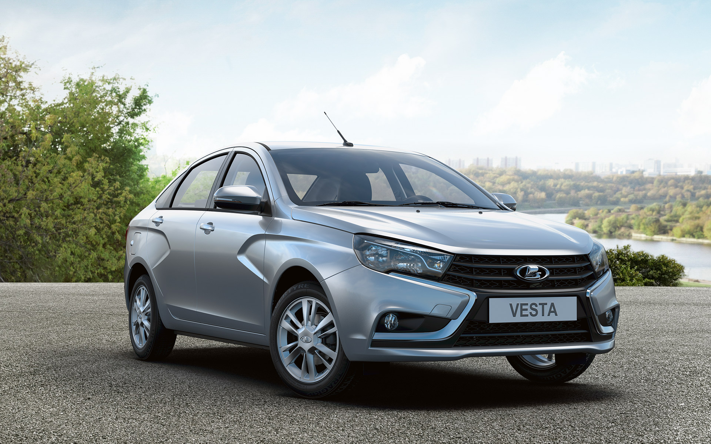
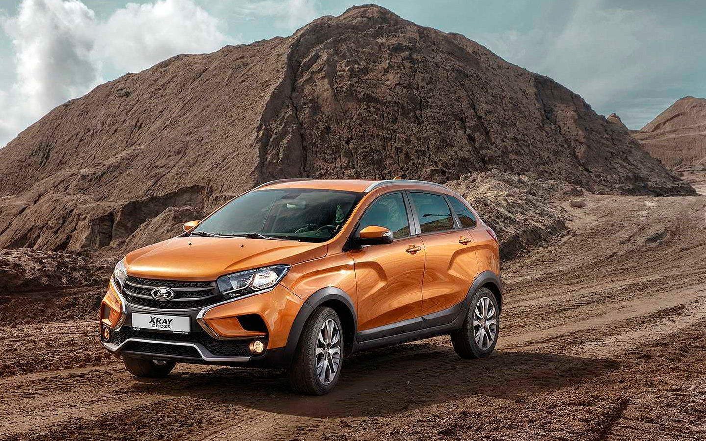
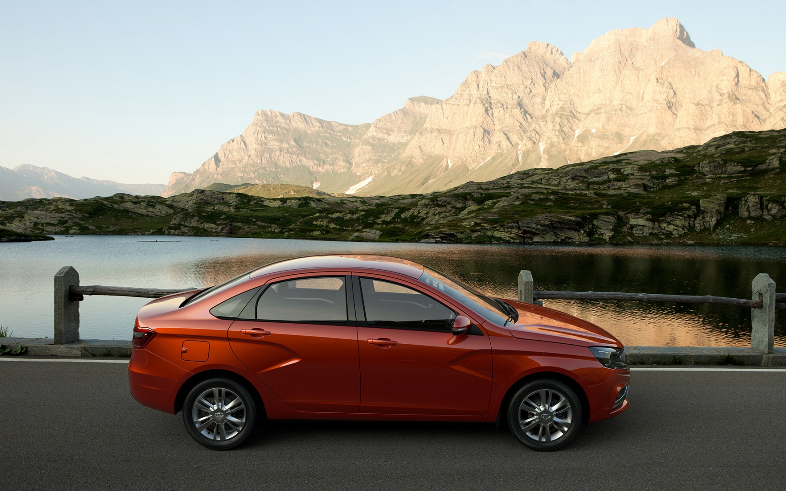

Lada
Марка автомобилей, производимых АО «АвтоВАЗ». Ранее использовалась только для автомобилей, поставлявшихся на экспорт, а для внутреннего рынка автомобили производились под маркой «ВАЗ». Следующее же семейство стало называться «Лада Спутник» и поставлялось на экспорт как LADA Samara, а в 1991 году стало называться так же и внутри страны.



